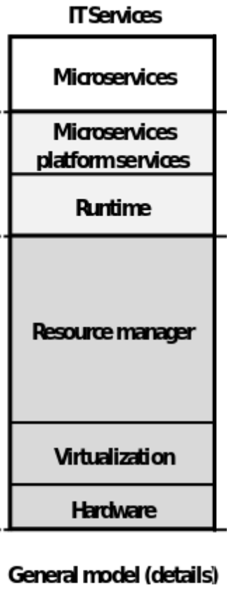
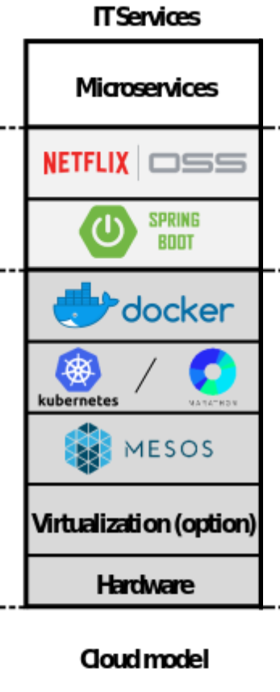
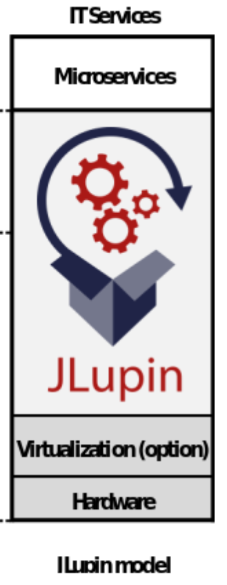

Introduction to JLupin Next Server
DEMO 1
Conclusions
Servers are throwable resistant
Servers are not resistant for other code flaws
For JEE Spec
Server isolates apps/ejbs etc
Apps does not interfere each other
Server is still one OS process
DEMO 2
Conclusions
Processes are easy to setup
Processes are hard to manage
Processes increase complexity
Need for resources
Processes are isolated
Need same resources like ports
We need to coordinate them
DEMO 3
Conclusions
Containers are easy to setup
Containers are hard to manage
Containers works like processes

Orchestration
Orchestration vs choreography
kubernetes
Ansible
Terraform
JLupin




DEMO 4
Conclusions
Let's play JLupin
JLupin is Enterprise solution
JLupin is complete
JLupin is fast in development
JLupin is mid in maintain
As Java dev
Work in JVM
don't need DevOps
As DevOps
Easy to maintain
Works like a process